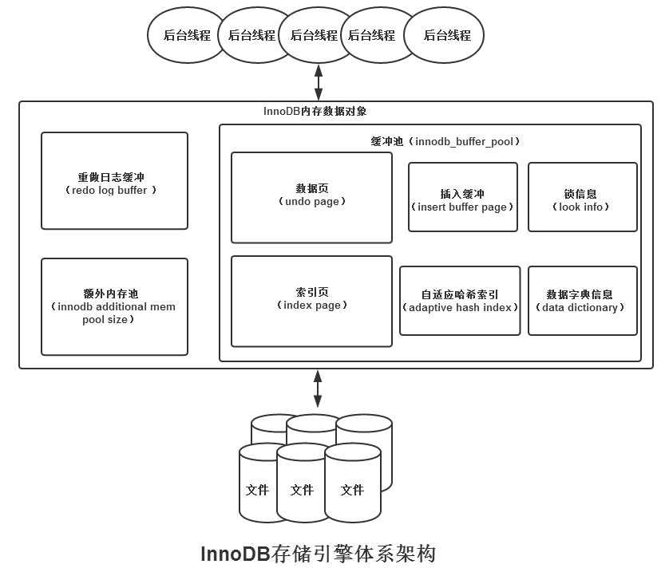
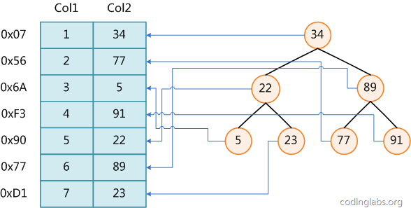
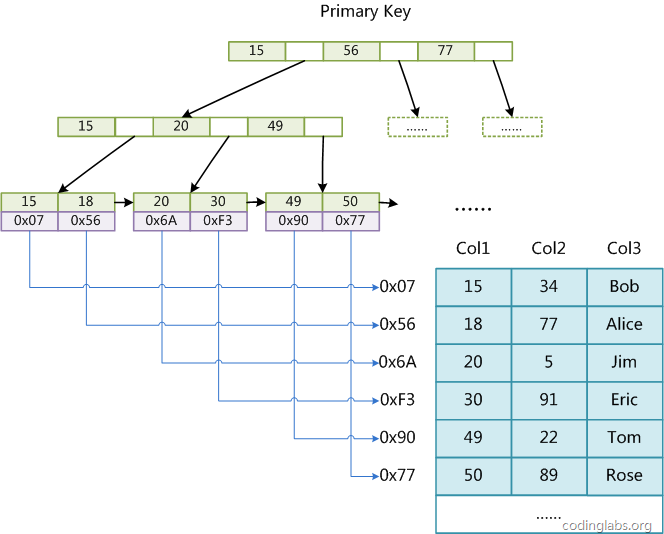
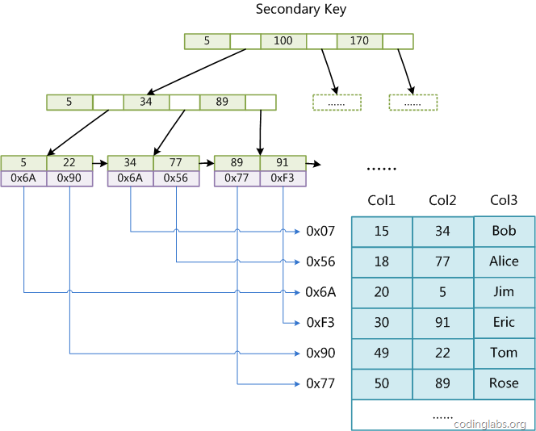
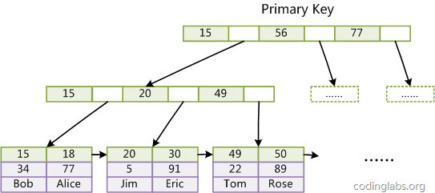
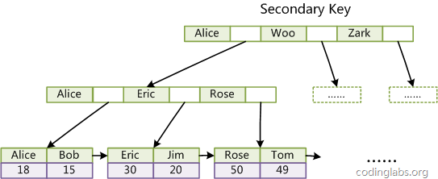

列举关系型数据库MySQL的InnoDB和MyISAM索引的实现和
数据库特性总结-关系数据库
关系型数据库（MySQL）
工作机制

Mysql的缓冲池机制是能充分利用内存且有预加载机制，在某些条件下目标数据完全在内存中，也能够具备非常好的查询性能。
索引
示例数据的B树索引示意图

MyISAM索引实现
MyISAM引擎使用B+Tree作为索引结构，索引文件和数据文件是分离的，索引文件仅保存数据记录的地址。叶节点的data域存放的是数据记录的地址。
MyISAM的索引方式也叫做非聚集索引，之所以这么称呼是为了与InnoDB的聚集索引区分。
主索引（Primary key）

MyISAM的索引文件仅仅保存数据记录的地址。辅助索引（Secondary key）

在MyISAM中，主索引和辅助索引（Secondary key）在结构上没有任何区别，只是主索引要求key是唯一的，而辅助索引的key可以重复。
同样辅助索引也是一颗B+Tree，data域保存数据记录的地址。
MyISAM中索引检索的算法为首先按照B+Tree搜索算法搜索索引，如果指定的Key存在，则取出其data域的值，然后以data域的值为地址，读取相应数据记录。
InnoDB索引实现
在InnoDB中，表数据文件本身就是按B+Tree组织的一个索引结构，这棵树的叶节点data域保存了完整的数据记录。这个索引的key是数据表的主键，因此InnoDB表数据文件本身就是主索引。
主索引（Primary key）

由InnoDB主索引（同时也是数据文件）的示意图，可以看到叶节点包含了完整的数据记录。这种索引叫做聚集索引。
因为InnoDB的数据文件本身要按主键聚集，所以InnoDB要求表必须有主键（MyISAM可以没有）； 如果没有显式指定，则MySQL系统会自动选择一个可以唯一标识数据记录的列作为主键；如果不存在这种列，则MySQL自动为InnoDB表生成一个隐含字段作为主键，这个字段长度为6个字节，类型为长整形。辅助索引（Secondary key）

InnoDB的辅助索引data域存储相应记录主键的值而不是地址，即InnoDB的所有辅助索引都引用主键作为data域。了解不同存储引擎的索引实现方式对于正确使用和优化索引都非常有帮助：
- eg 知道了InnoDB的索引实现后，就很容易明白为什么
不建议使用过长的字段作为主键，因为所有辅助索引都引用主索引，过长的主索引会令辅助索引变得过大。 - eg 用
非单调的字段作为主键在InnoDB中不是个好主意，因为InnoDB数据文件本身是一颗B+Tree，非单调的主键会造成在插入新记录时数据文件为了维持B+Tree的特性而频繁的分裂调整，十分低效，而使用自增字段作为主键则是一个很好的选择。
- eg 知道了InnoDB的索引实现后，就很容易明白为什么
存储
读取

应用场景
关系型数据库适合存储结构化数据，如用户的帐号、地址：
- 这些数据通常需要做
结构化查询，比如join，这时候，关系型数据库就要胜出一筹 - 可以预期的数据增长规模和增长速度
- 事务性、一致性
问题记录
由于传统机械磁盘有局部性原理和磁盘预读，数据库索引采用BTree，现在SSD已经普及，Btree数据结构的优势还在不在？
参考在 SSD 相对在服务器端普及的今天，为什么大部分数据库还是用 B/B+ 树实现的？
MySQL数据写入流程是什么？
MySQL数据查询的流程是什么？索引如何生效的？
MySQL的存储引擎InnoDB和MyISAM有什么区别，各自的存储结构是什么样的？
- 本质上都是B+Tree索引结构，但是InnoDB是
聚集索引（树的叶节点data域保存了完整的数据记录。索引的key是数据表的主键），MyISAM是非聚集索引（引文件和数据文件是分离的，索引文件仅保存数据记录的地址。叶节点的data域存放的是数据记录的地址）； - MyISAM不支持
事务，表级锁，适合查询以及插入为主的应用；InnoDB支持事务，行级锁，适合频繁修改以及涉及到安全性较高的应用；（在where条件没有使用主键时，照样会锁全表，如update table set a=1 where user like '%lee%'）； - InnoDB支持
外键，MyISAM不支持； - InnoDB不支持
FULLTEXT类型的索引，MyISAM支持； - InnoDB中不保存表的行数，如
select count(*) from table时，InnoDB需要扫描一遍整个表来计算有多少行，但是MyISAM只要简单的读出保存好的行数即可。注意的是，当count(*)语句包含where条件时MyISAM也需要扫描整个表； - truncate表时，InnoDB是一行一行的删除，效率非常慢。MyISAM则会重建表；
常规说法：现在一般都是选用innodb了，主要是myisam的全表锁，读写串行问题，并发效率锁表，效率低myisam对于
读写密集型应用一般是不会去选用的。